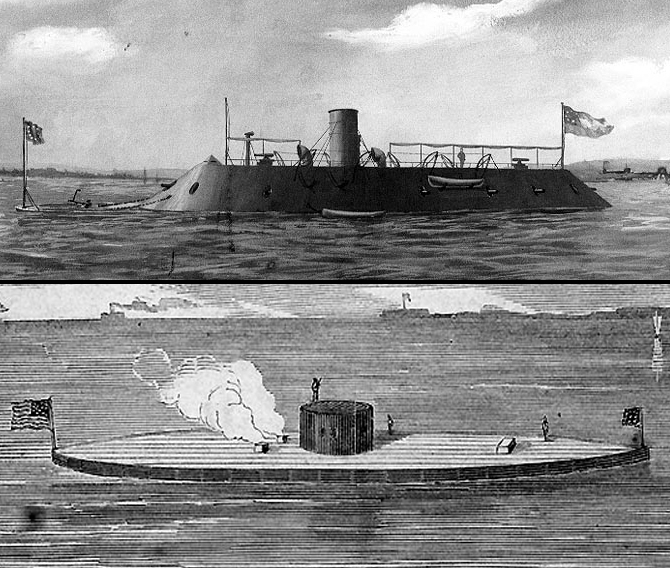
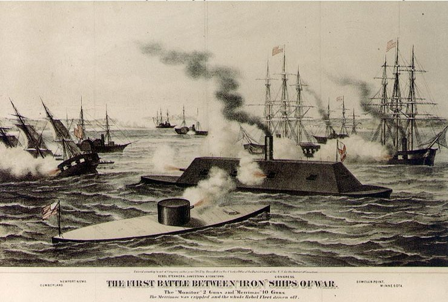

|
The Monitor and Merrimack fought the first
battle between ironclad vessels at Hampton Roads, Virginia,
a battle which changed the nature of naval military
strategy, while inaugurating a new age of naval military
technology.
The use of ironclad technology became widespread during
the Crimean War, in which vessels, made largely immobile by
the weight of heavy iron plating, had been constructed for
shore bombardments. Following the Crimean War, improvements
|

The Merrimack (aka CSS Virginia), top, and
the USS Monitor, bottom.
|
to the technology by the British and French navies produced
superior models which included more seafaring capabilities.
Not until the onset of the Civil War, however, did the
emergent technology, developed in two radically different
forms by the Union and Confederate navies, encounter full
combat testing.
The Union Navy had the advantage of greater numbers and
an industrial economy. Seeking to negate these advantages,
the Confederate Navy, under the leadership of Secretary
Stephen Mallory, turned to the ironclad. Working from plans
drawn up by John Brooke, building began on the first
Confederate ironclad. Reclaiming the wooden steam frigate
Merrimack (the common spelling Merrimac is an
oft-repeated misspelling of the name of the original
vessel), which had been abandoned by the North at the
Norfolk navy yard, the wooden upper hull was covered with
iron plating, ten heavy guns including four rifled guns,
and, borrowing from pre-sail warships, a ram. Rechristened
the CSS Virginia, the ship's appearance was described
as "the roof of a sunken house with a smokestack protruding
from the water."
The Union Navy, faced with the threat posed by the
ongoing construction of the Merrimack, responded with
the construction of its own ironclad warship. The Union
vessel, developed by Swedish-born marine engineer John
Ericsson, featured a dual-hulled design with extensive armor
plating. With its deck located at the waterline, limiting
the exposed surface area, and a cylindrical turret rising
prominently from the ship's center, the USS Monitor
was said to look like a "cheesebox on a raft." Armed with
only two cannons located in its slowly rotating turret, the
design of the smaller ship, at 172 feet in length to the
Merrimack's 275 feet, emphasized its maneuverability
and defensive strengths.
In an effort to break the Union naval blockade,
generally, and to reestablish strategic lines to Richmond,
specifically, Confederate Secretary Mallory sent the
Merrimack to Hampton Roads, a harbor at the mouth of
the James River. On March 8, 1862, the Merrimack,
under the command of Captain Franklin Buchanan, began an
assault on the wooden ships of the Union naval blockade at
Hampton Roads. First attacking the Cumberland, the
Merrimack encountered substantial cannon fire,
sustaining little damage while firing upon, then ramming and
sinking the Union sloop. Turning to the frigate
Congress, a cannon barrage forced the Union ship to
run aground and surrender, while a third Northern warship,
the Minnesota, also ran aground. When Federal troops
on shore fired on the Confederate vessels accepting the
surrender of the Congress, injuring a number of
Confederates including Buchanan, the captain ordered the
demolition of the Union frigate. By the time darkness and
low tide forced the Merrimack back to Norfolk, the
Union had lost over 300 men, including acting captain of the
Congress Joseph Smith, while those Union ships not
already run aground or destroyed were forced to flee the
area.
The following morning, the Merrimack, now under
the command of Lt. Catesby Jones as a result of Buchanan's
injury, set out to complete the destruction of the
Minnesota. However, the Monitor, having
|

The Battle of Hampton roads ended
as a tactical draw.
|
completed a perilous journey from New York during which the
ship nearly sank twice, reached Hampton Roads in time to
prevent the destruction of the Minnesota. The Union
ironclad, commanded by Lt. John Worden, engaged the
Merrimack in a four-hour battle, during which each
ship landed a number of direct hits on the opposing vessel
at short range with little effect. Though the
Merrimack ran temporarily aground during the battle,
the Monitor, with only two guns firing a light powder
charge, was unable to take advantage of the vulnerability.
Late in the conflict, the Monitor's pilothouse was
hit, temporarily blinding Worden and forcing the ship to
disengage, once again exposing the Minnesota. The
Merrimack, however, fearing the receding tide and in
need of ammunition and minor repairs, returned to the
Norfolk naval yard, ending the battle.
Despite the prominent role of both warships in naval
history as a result of their famous stalemate, neither was
to enjoy a long life at sea. The Merrimack, forced
to flee Norfolk, was unable to navigate safely up the James
River and was sunk on purpose on May 10, 1862. The
Monitor, though nimble by ironclad standards, was
barely seaworthy in rough conditions and sank during a storm
off Cape Hatteras on December 31, 1862.
Source: Joan Waugh, ed., Facts on File Encyclopedia of American
History: Civil War and Reconstruction, 1856 to 1869 (New York: Facts on
File, 2003), 237-239.
|